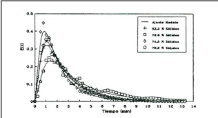

운영 조건이 정의된 후, 각 시험에서 수행된 측정은 다음과 같습니다:
각 시험은 이전 평가에서 얻은 내부 로드로 시작되었으며, 이는 밀의 안정화 시간을 줄이기 위한 목적이었습니다. 대부분의 시험에서, 밀은 표준 조건에서 작동을 시작했으며, 작동이 안정화된 후에 계획된 변수를 변경했습니다. 시스템이 다시 안정화된 후, 밀의 배출 샘플을 수집하고 전력 소비를 기록했습니다. 이 기간 동안, 유체의 주류 시간 분포를 결정하기 위한 작업이 이루어졌습니다. 각 시험의 끝에서, 광물 및 물의 공급 흐름을 동시에 차단하여 밀의 채움 수준을 직접 측정하기 위해 밀을 멈추었습니다. 밀의 내용물은 가중치와 습윤 부피를 결정하기 위해 드럼으로 배출되었으며, 건조된 후 다시 가중치를 통해 입도 분포를 결정했습니다. 내부 로드에 포함된 물의 정확한 얻기에는 가장 큰 어려움이 있었으며, 또한 미세 입자들의 완전한 수집도 어렵게 나타났습니다.
밀이 연구 중인 운영 조건에서 안정화된 후, 배출의 입도 및 고체 백분율 특성을 평가하기 위한 샘플링은 1시간 동안 10분 간격으로 이루어졌습니다. 한편, 샘플링 기간 동안 4개의 공급 드럼이 임의로 선택되었으며, 이들로부터 두 개의 샘플이 입도 특성을 위해 수집되었습니다. 동시에, 각 시험에서, 밀 내 물의 주류 시간 분포(DTR)를 결정하기 위해 나트륨 클로라이드를 추적제로 사용했습니다. 추적제의 회수된 배출량은 물의 전도도 측정을 통해 측정되었습니다. 이를 위해 다음 시간 간격에서 30개의 배출 샘플을 수집했습니다:
실험 결과
| 번호 | 4" + 1/2" 입도 분포 (%) | 전력 (kW) | 특정 에너지 (kWh/t) | 채움 수준 (%) | ||
|---|---|---|---|---|---|---|
| 1 | 10.5 | 78.6 | 3.09 | 25.9 | ||
| 2 | 10.4 | 11.7 | 7.79 | 9.36 | 2.71 | 18.2 |
| 13 | 12.6 | 9.2 | 78.2 | 9.15 | 2.64 | 18.6 |
| 14 | 15.7 | 5.9 | 78.1 | 8.89 | 2.55 | 18.7 |
| 4 | 13.2 | 11.1 | 75.9 | 8.44 | 2.47 | 17.5 |
| 15 | 15.7 | 11.7 | 78.4 | 8.69 | 2.42 | 17.1 |
| 16 | 16.1 | 6.5 | 77.4 | 8.91 | 2.46 | 22.7 |
표 2. 반복 시험에서 얻어진 결과 비교.
